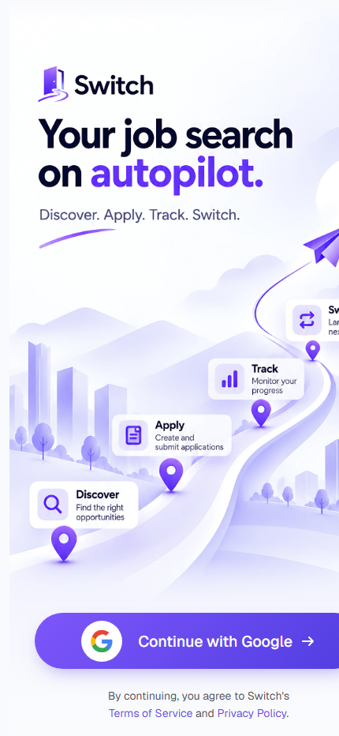

8to50+
people on the project as it grew (30+ developers, 10+ testers)
I helped set up the testing standards and checks the whole team followed.
I test software for a living: 3.5 years, 40+ releases, and an AI tester I built that cut testing time by 70%.

Every app you use was tested before it reached you. My job is to try to break it first, so you never notice anything went wrong.
8to50+
people on the project as it grew (30+ developers, 10+ testers)
I helped set up the testing standards and checks the whole team followed.
70%
faster to start testing a new feature
Thanks to an AI tester I designed. It also cut paperwork by 85%.
40%
less time on the final checks before each release, using automated tests I built
40+
releases and 10+ urgent fixes delivered on schedule for a US education company
80+
job interviews conducted, 20+ new joiners trained
25%
fewer bugs reaching customers after testing started earlier
I write programs that test software on their own, so every release is checked the same careful way. Tools: Playwright and Selenium.
I own the final checks before new versions go live, on a strict two-week schedule, and speak with the client every day.
I check that apps stay fast and correct when many people use them at once, and that their data connections work.
I define what "good enough to ship" means and help a growing team follow it.
I designed an AI that reads a request and the app's code, finds what is unclear, writes the tests and runs them. I approve every stage. See how it works
80+ interviews, 20+ new joiners trained and talks at 10+ universities.
A project I built
The ticket is the written request for a new feature or a fix. That is all it needs to start.
The ticket, the app's code, the product documents and the change history.
It works out what is missing or unclear from the code, and only asks me about real business questions.
A summary, a test plan, an effort estimate and the test cases. I approve each one before it moves on.
It tests the app like a person would, takes screenshots as proof and reports any bugs to me.

Finds jobs, scores how well they fit, and tracks every application. Built solo with AI agents and 1000+ automated tests.
Open the appHow the AI tester is designed, in plain terms: what it does and why it can be trusted.
Read the write-upA hand-picked list of open-source tools that use AI to test software.
Browse the listHand-written. Tap X-ray at the top to see the hidden labels testers add to a page.
View sourceDec 2024 to present
Josh Technology Group, Gurgaon
Nov 2022 to Dec 2024
Josh Technology Group, Gurgaon
Jun to Sep 2022
KPMG Assurance and Consulting, Noida
B.Tech, Computer Science and Engineering
Sharda University, Greater Noida
2019 to 2023
Three Anthropic courses on Claude and working with AI, and a hackathon award for a demo that stood out among 25+ teams.
Best Demo Energy Award at a global client hackathon.
Open to senior QA roles
Hiring, or building something? Send a note about what you need.